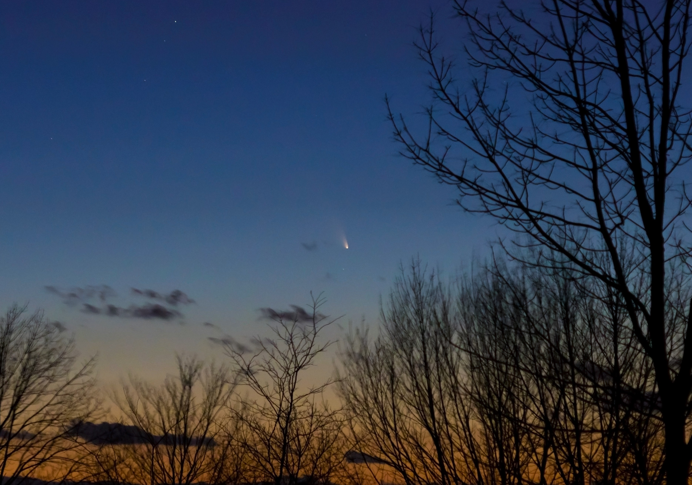

PanSTARRS
In mid-March, the comet PanSTARRS (C/2011 L4) was visible in the Ithaca sky for several days near sunset. This particular image was taken by Richard Hennig on March 14th, 2013. PanSTARRS gets its name from the PanSTARRS telescope that astronomers at the University of Hawaii used to discover the comet.
